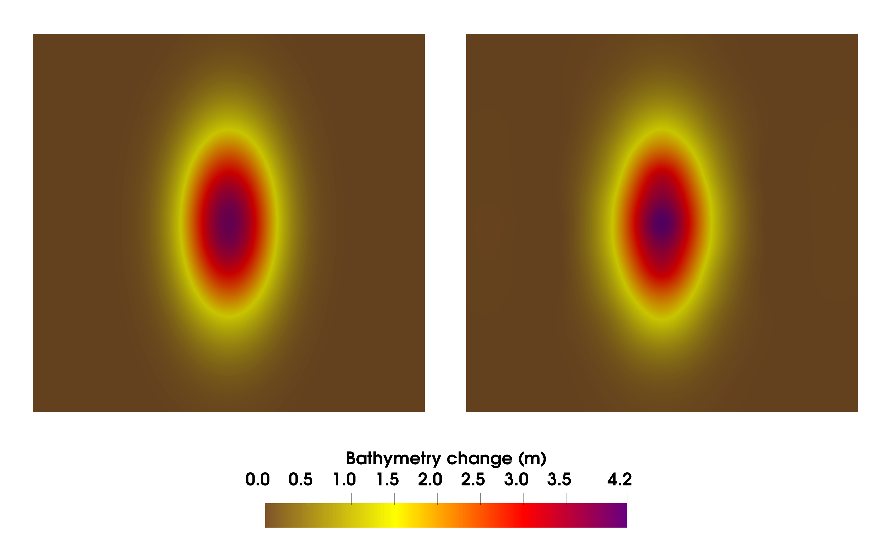
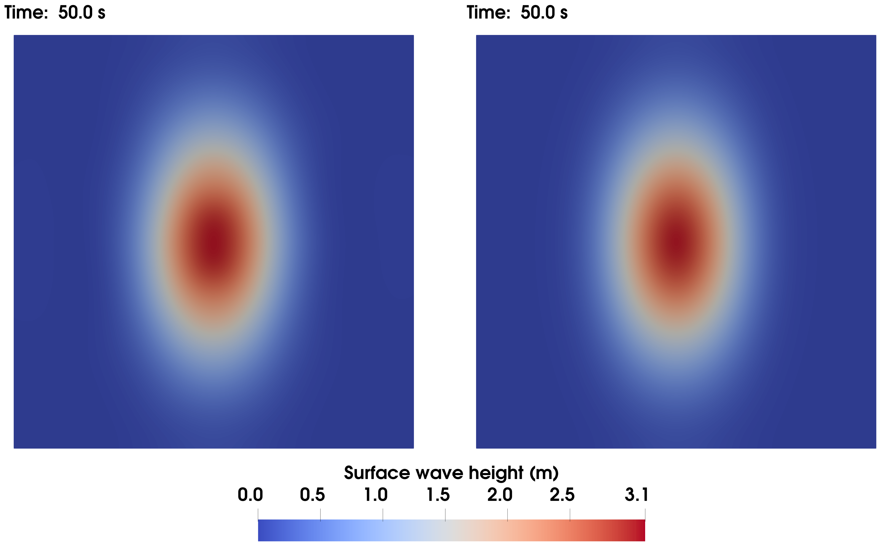

Real-Time High-Fidelity Algorithms for
Extreme-Scale Bayesian Inverse Problems
Involving Shift-Invariant Systems
Sreeram Venkat1, Stefan Henneking1, Milinda Fernando1, Omar Ghattas1
1Oden Institute for Computational Engineering and Sciences, The University of Texas at Austin
WCCM-PANACM 2024 — Vancouver, BC — July 21-26, 2024

Cascadia Subduction Zone Tsunami
Proposed Sensor Network

Cascadia Subduction Zone: Tsunami Early Warning
- Predict tsunami wave propagation by inversion of near-field pressure data recorded during a megathrust rupture
- Quantify uncertainty in inverse solution via framework of Bayesian inference
- Invert for the spatiotemporal seafloor motion (time-dependent boundary condition) using a (linearized) acoustic-gravity model in the (compressible) deep ocean
- Challenges
- Forward problem involves 3D space + time
- Parameter is a 2D space + time field
- Hyperbolic forward PDEs don't easily lend themselves to surrogates
- Inversion computation must be done in real time (i.e. seconds)
Forward Problem
Coupled Acoustic-Gravity wave equations:
\[\begin{cases} \rho \frac{ \partial\boldsymbol{u}}{\partial t} + \nabla p = \boldsymbol{0}, \frac{1}{K} \frac{ \partial p}{\partial t} + \nabla \cdot \boldsymbol{u} = 0, & \Omega \times (0,T)\nonumber\\ p = \rho g \eta, \frac{ \partial\eta}{\partial t} = \boldsymbol{u} \cdot \hat{\boldsymbol{n}}, & \Gamma_s \times (0,T) \nonumber\\ \boldsymbol{u} \cdot \hat{\boldsymbol{n}} = -\frac{\partial b}{\partial t}, \text{\textcolor{BF5700}{← parameter}} & \Gamma_b \times (0,T) \nonumber\\ \boldsymbol{u} \cdot \hat{\boldsymbol{n}} = Z^{-1} p, & \Gamma_a \times (0,T)\nonumber \end{cases} \]

- Velocity: \(\boldsymbol{u}(\boldsymbol{x}, t)\), Pressure: \(p(\boldsymbol{x}, t)\), Surface Height: \(\eta(\boldsymbol{x}, t)\)
- Bulk modulus \(K\), density \(\rho\), \(Z = \rho c\), \(c = \sqrt{K/\rho}\)
- Bathymetry \(b(\boldsymbol{x}, t)\); homogeneous ICs
- Observations of pressure \(p\) at seafloor sensors
Implemented in MFEM
Inverse Problem
- Given pressure recordings from sensors on the seafloor, infer the seafloor motion along the fault line.

Inferred seafloor motion (mean and uncertainty)
Reconstructed sea bottom pressure
Reconstructed surface gravity wave
Bayesian Inverse Problem
- Bayes Rule: \(\text{d}\mu_{\text{post}} \propto \pi_{\text{like}}(d|m) \text{d}\mu_{\text{prior}} \)
- Goal: determine posterior measure \(\mu_{\text{post}}\)
- \(m\): model parameters — spatiotemporal field: \(\frac{\partial b}{\partial t} (\boldsymbol{x},t)\)
- \(d\): pressure obs. — pointwise in space and time: \(\left\{p(\boldsymbol{x}_i, t)\right\}_{i=1}^{N_d}\)
- Parameter-to-Observable (p2o) Map: \(\mathcal{F}: m(\boldsymbol{x},t) \mapsto d(\boldsymbol{x}_i,t)\)
Eigenvalues of \(\mathbf{F} \mathbf{F}^*\) for a representative case with ~132M parameters and ~25K data points.
Linear Inverse Problem, Gaussian Prior
Gaussian Prior with Matérn Covariance:\[m \sim \mathcal{N}(m_{\text{prior}}, \Gamma_{\!\text{prior}}), \quad \Gamma_{\!\text{prior}} \coloneqq \left( \alpha_1 I - \alpha_2 \Delta_{\text{2D}} - \alpha_3 \partial_t^2 \right)^{-2}\]
Likelihood: \(\pi_{\text{like}}(d|m) \propto \exp\left(-\frac{1}{2} \|\mathcal{F}m - d\|_{\Gamma_{\!\text{noise}}^{-1}}^2\right)\)
Observations: \(d = \mathcal{F}m + \nu, \quad \nu \sim \mathcal{N}(0, \Gamma_{\!\text{noise}})\)
Posterior:
\[\begin{align*} \mu_{\text{post}} &= \mathcal{N}(m_{\text{map}}, \Gamma_{\!\text{post}}) \\ \Gamma_{\!\text{post}}&=\left(\mathcal{F}^* \Gamma_{\!\text{noise}}^{-1} \mathcal{F} + \Gamma_{\!\text{prior}}^{-1}\right)^{-1}\\ m_{\text{map}}&=\Gamma_{\!\text{post}}\left(\mathcal{F}^* \Gamma_{\!\text{noise}}^{-1} d + \Gamma_{\!\text{prior}}^{-1} m_{\text{prior}}\right) \end{align*}\]
Finding the MAP Point
- \(\Gamma_{\!\text{post}}^{-1} \eqqcolon \mathcal{H} \) is the Hessian (of negative log-posterior).
- Each matrix-free Hessian action requires 1 Forward and 1 Adjoint PDE solve.
- Finding \( m_{\text{map}} \) with CG requires \(\text{rank}(\mathcal{H})\) Hessian actions1.
- For hyperbolic systems, \(\mathcal{H}\) can have high rank \(\Rightarrow\) many PDE solves
-
Cascadia Tsunami Problem:
- param. spatial DoFs: \(N_m\sim 10^6\), # of sensors: \(N_d\sim 10^2\), time steps: \(N_t\sim 10^3\)
- \(\Rightarrow\) \(\text{dim}(\mathbf{m}) \sim 10^{9}, \text{dim}(\mathbf{d}) \sim 10^5\) \(\Rightarrow\) \(\text{rank}(\mathbf{H}) \gtrsim 10^4\)
- ~1 hour / Hessian action \(\Rightarrow\) over 1 year to find \(m_{\text{map}}\)
- Useless. We need to find the MAP point in seconds.
Real-Time Inference
- Autonomous Dynamical System: evolution does not depend
explicitly on independent variable (e.g. time)
- Here: the mapping mapping \(m(\boldsymbol{x},t+\tau) \mapsto d(\boldsymbol{x}_i,t+\tau)\) is the same as the mapping \(m(\boldsymbol{x},t) \mapsto d(\boldsymbol{x}_i,t)\)
-
Exploit (time) shift invariance of autonomous dynamical systems
- Reduce computation and storage costs
- Split inversion into Offline and Online phases:
- Phase 1 (Offline): Construct p2o map from adjoint PDE solves
- Phase 2 (Offline): Compute compact representation of \(\Gamma_{\!\text{post}}\)
- Phase 3 (Online): Compute MAP point in real time
- Offline/Online decomposition allows us to exactly* solve the inverse problem in real time using the high-fidelity model.
*Exact up to discretization errors
Real-Time Inference
Phase 1 (Offline): Construct p2o map from adjoint PDE solves
- Recall: \( \mathbf{H} = \mathbf{F}^* \Gamma_{\!\text{noise}}^{-1} \mathbf{F} + \Gamma_{\!\text{prior}}^{-1}\)
- Shift invariance \(\Rightarrow\) \(\mathbf{F}\) is block lower-triangular Toeplitz
- Only one block column of \(\mathbf{F}\) needs to be computed/stored
- Adjoint PDE solved backwards in time with "source" at each observation point (~100 sensors)
\[ \mathbf{F} = \begin{bmatrix} F_{11} & 0 & 0 & \cdots & 0\\ F_{21} & F_{11} & 0 & \cdots & 0\\ F_{31} & F_{21} & F_{11} & \cdots & 0\\ \vdots & \vdots & \vdots & \ddots & \vdots\\ F_{N_t,1} & F_{N_t-1,1} & F_{N_t-2,1} & \cdots & F_{11} \end{bmatrix}, \quad F_{ij} \in \mathbb{R}^{N_d \times N_m} \]
Real-Time Inference
Phase 2 (Offline): Compute compact representation of \(\Gamma_{\!\text{post}}\) (through Sherman-Morrison-Woodbury formula)
Phase 3 (Online): Compute MAP point in real time
- Both rely on fast applications of \(\mathbf{F}\) and \(\mathbf{F}^*\).
- Block Toeplitz structure \(\Rightarrow\) FFT-based Hessian actions (algorithm implemented on Multi-GPU cluster)
- ~200,000x speedup vs matrix-free Hessian action via forward and adjoint PDE solves for ~132M parameters and ~25K data points1
18 Lonestar6 NVIDIA A100 40GB
GPU nodes (3 GPUs/node) vs 2048 Frontera CLX nodes (56
cores/node).
S. V., M. Fernando,
S. Henneking, & O. Ghattas, (2024). Fast and
Scalable FFT-Based GPU-Accelerated Algorithms for Hessian Actions Arising in Linear Inverse
Problems Governed by Autonomous Dynamical Systems. ArXiv. /abs/2407.13066
Real-Time Inference
- Block Toeplitz structure \(\Rightarrow\) FFT-based Hessian actions (algorithm implemented on Multi-GPU system)
- ~200,000x speedup vs matrix-free Hessian action via forward and adjoint PDE solves for ~132M parameters and ~25K data points
Left: Single GPU performance; Right: Weak scaling on up to 48 GPUs
Phase 2: Compute Compact Representation of \(\Gamma_{\!\text{post}}\)
- Sherman-Morrison-Woodbury formula applied to \(\Gamma_{\!\text{post}}\): \[ \begin{alignat*}{2} \Gamma_{\!\text{post}}&=&&\left(\mathbf{F}^* \Gamma_{\!\text{noise}}^{-1} \mathbf{F} + \Gamma_{\!\text{prior}}^{-1}\right)^{-1}\\ &=\Gamma_{\!\text{prior}}\Big(I - \mathbf{F}^*&&\underbrace{\textcolor{BF5700}{\Big(\Gamma_{\!\text{noise}} + \mathbf{F}\Gamma_{\!\text{prior}}\mathbf{F}^*\Big)}}_{}^{\textcolor{BF5700}{\mathbf{K}}}\vphantom{a}^{-1}\mathbf{F}\Gamma_{\!\text{prior}}\Big) \end{alignat*} \]
- Inversion operation shifted from a matrix of size \(N_m\times N_m\) to a matrix of size \(N_d\times N_d\)
- \(\textcolor{BF5700}{\mathbf{K}}\) is a dense matrix of size \(\sim 10^5\times 10^5 \Rightarrow\) Prefactorize
- Pointwise Variance: \(\text{diag}(\Gamma_{\!\text{post}})\)
- Precompute with stochastic estimators1
- Subsample and interpolate on parameter grid
Phase 3 (Online): Compute MAP Point in Real Time
Test problem: \(N_m = 263\text{K}, N_d = 49, N_t = 500\) (~132M parameters, ~25K data) running on 8 Lonestar6 nodes (24 GPUs)
\( \mathbf{m}_{\text{map}}=\Gamma_{\!\text{prior}}\left(\mathbf{I} - \mathbf{F}^*\textcolor{BF5700}{\mathbf{K}}^{-1}\mathbf{F}\Gamma_{\!\text{prior}}\right)\mathbf{F}^*\Gamma_{\!\text{noise}}^{-1}\mathbf{d} \)
| Step | Compute Time |
|---|---|
| \(2 \ \mathbf{F}^*\) matvecs | 0.022s |
| \(1 \ \mathbf{F}\) matvec | 0.011s |
| \(1 \ \textcolor{BF5700}{\mathbf{K}}\) solve | 0.024s |
| Total | 0.079s* |
*For priors with spatial correlation only, \(\Gamma_{\!\text{prior}}\mathbf{F}^*\) is also block-triangular Toeplitz.
3D Inversion: True Pressure Field

3D Inversion: Sensor Observations
Sea bottom pressure (no noise)
Observations with 6% relative noise
| Noise Level | Rel. Error |
|---|---|
| 2% | 0.042570 |
| 4% | 0.049777 |
| 6% | 0.061645 |
Parameter Inference Error
| Noise Level | Rel. Error | Rel. Data Misfit |
|---|---|---|
| 2% | 0.019317 | 0.000237 |
| 4% | 0.040089 | 0.000999 |
| 6% | 0.058727 | 0.000396 |
Pressure Reconstruction Error
3D Inversion Results: Bathymetry
Left:True total bathymetry change (time-integrated parameter field); Right: Total bathymetry change inferred from synthetic observations with 6% relative additive noise
3D Inversion Results: Pressure


Left: Sea bottom pressure reconstructed with the parameter field inferred from synthetic observations with 6% relative additive noise; Right: Difference between reconstructed and true pressure field
3D Inversion Results: Surface-Gravity Wave
Left: Surface gravity wave obtained from true parameter field; Right: Surface-gravity wave reconstructed with the parameter field inferred from synthetic observations with 6% relative additive noise
Summary
- Conclusions:
- Exploit autonomous structure of the Hessian to enable real-time inference at extreme scale
- Fast matvec algorithm speeds up Hessian action by ~200,000x
- Solve inverse problem with ~132M parameters and ~25K data points in 0.079s
- Other applications: seismic source inversion, contaminant transport
- Future Work:
- Goal-oriented UQ
- Data-driven priors
- Acknowledgements:
- NSF Graduate Research Fellowship grant: DGE 2137420
- Texas Advanced Computing Center (TACC)